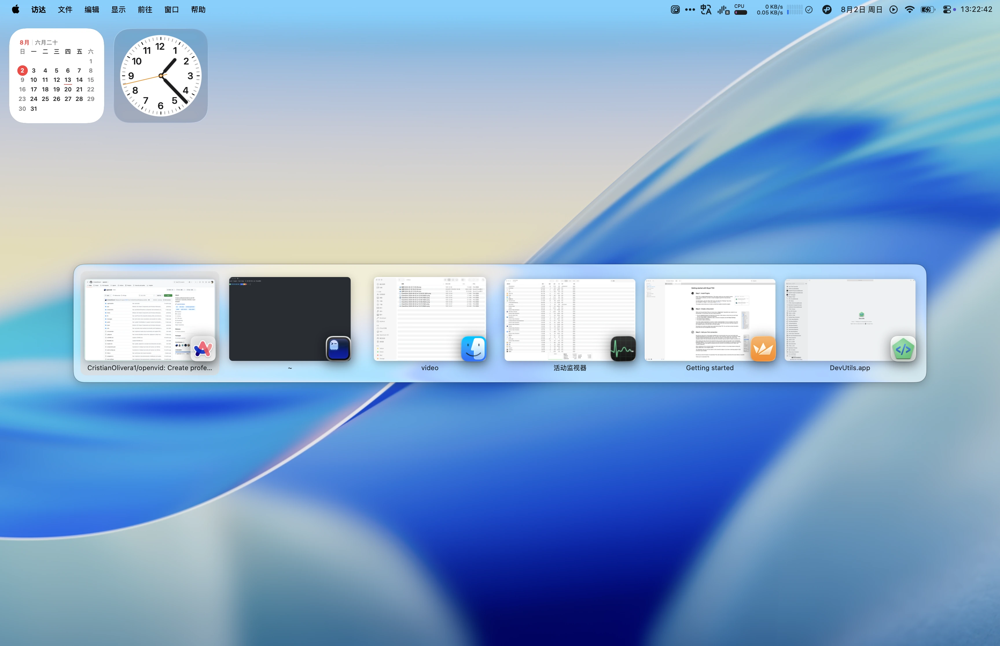
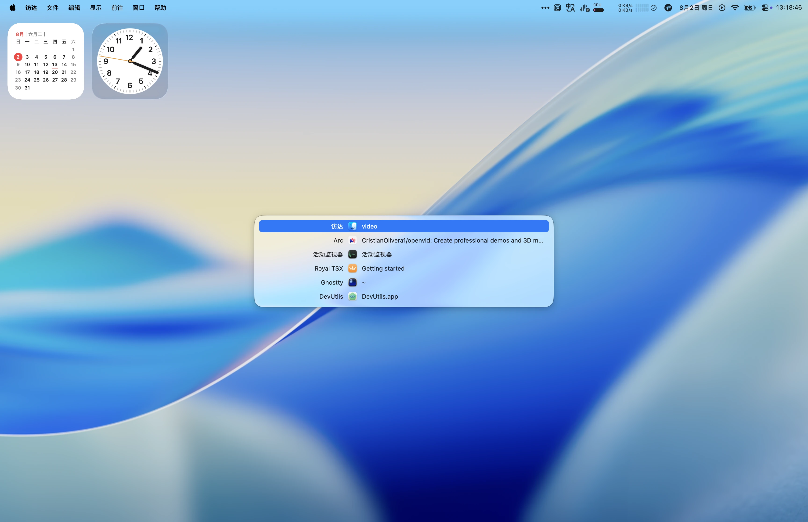
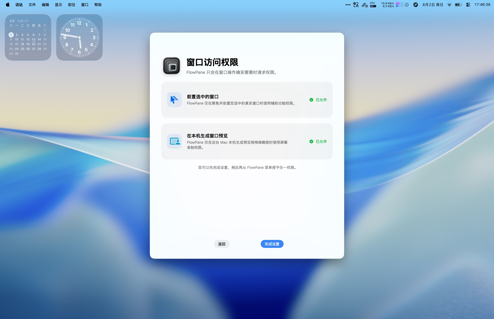

Compact List 紧凑列表
Move through every open window in the compact list. 在紧凑列表中浏览所有打开的窗口。
A simple, fast, elegant Mac window switcher with a compact list and visual preview grid. 一款简单、快速、优雅的 Mac 窗口切换工具，兼具紧凑列表与预览网格。


Read window titles, follow familiar app icons, and move through a dense list without losing your place. 通过窗口标题与熟悉的应用图标，在紧凑列表中连续移动，始终知道自己身在何处。
When the title is not enough, real window previews make the right choice instantly recognizable. 当标题还不够直观，真实窗口预览让目标一眼可辨。
Assign the combinations that fit your hands. FlowPane keeps each switcher ready. 设置最顺手的组合键，FlowPane 让每种切换方式随时就绪。
Move through every open window in the compact list. 在紧凑列表中浏览所有打开的窗口。
See real window previews and switch by sight. 查看真实窗口预览，凭视觉快速切换。
Cycle through every window in the current app. 在当前应用的所有窗口之间切换。
Preview Grid thumbnails are created locally. FlowPane does not upload your window previews, and Compact List does not need Screen Recording. 预览网格缩略图在本地生成。FlowPane 不会上传窗口预览，紧凑列表也不需要屏幕录制权限。
Read the privacy details 查看隐私详情No account. No analytics. No window data sent to a server. 无需账户。没有分析统计。窗口数据不会发送到服务器。
Accessibility brings the selected real window forward. Screen Recording creates local Preview Grid thumbnails. 辅助功能用于将选中的真实窗口带到前台，屏幕录制用于在本地创建预览网格缩略图。

FlowPane requires macOS 14 or later. FlowPane 需要 macOS 14 或更高版本。
Accessibility is used when FlowPane focuses and raises the real window you select. FlowPane 使用辅助功能权限来聚焦并置前你选择的真实窗口。
No. It is used only for local Preview Grid thumbnails. Compact List works without it. 不是。它仅用于在本地创建预览网格缩略图，紧凑列表无需此权限。
No. FlowPane is proprietary. The public GitHub repository contains this website and release downloads, not the application source. 不是。FlowPane 是专有软件。公开 GitHub 仓库仅包含官网与版本下载，不包含应用源代码。